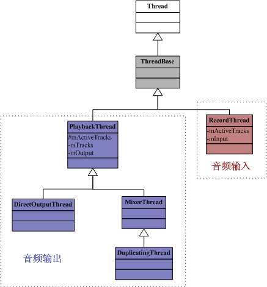
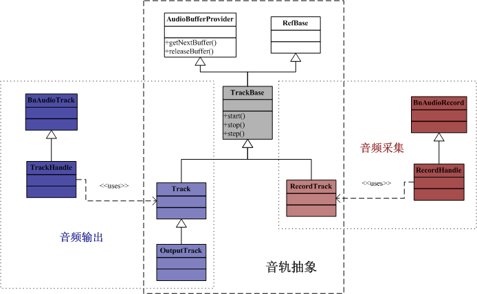
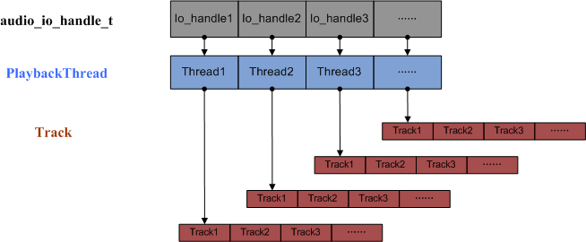

AudioFlinger
概述
AudioFlinger向下访问AudioHardware，实现输出音频数据，控制音频参数。同时，
AudioFlinger向上通过IAudioFinger接口提供服务。所以，AudioFlinger在Android的
音频系统框架中起着承上启下的作用，地位相当重要。
功能描述
-
AudioFlinger包含以下内部类：
-
IAudioFlinger接口：这是AudioFlinger向外提供服务的接口，例如openOutput，openInput，createTrack，openRecord等等，应用程序或者其他service通过ServiceManager可以获得该接口。该接口通过继承BnAudioFlinger得到。
-
ThreadBase：在AudioFlinger中，Android为每一个放音/录音设备均创建一个处理线程，负责音频数据的I/O和合成，ThreadBase是这些线程的基类，所有的播放和录音线程都派生自ThreadBase。
-
PlaybackThread：音频输出线程。它有一个mOutput变量，类型为AudioStreamOutput*，因此它与HAL层的音频输出相关联。
-
MixerThread：混音线程，它将来自多个源的音频数据混音后再输出。
-
DirectOutputThread：多路输出线程，它从MixerThread派生，意味着它也能够混音。它最终会把混音后的数据写到多个输出中，也就是一份数据会有多个接收者。这就是Duplicate的含义。
-
PlaybackThread维护两个Track数组，一个是mActiveTracks，表示当前活跃的Track。另一个是mTracks，表示所有Track。
-
RecordThread：音频采集线程。它有一个mInput变量，类型为AudioStreamInput*，因此它与HAL层的音频采集相关联。

AudioFlinger初始化
-
初始化最主要的功能是创建HAL层的模块对象，并初始化默认音频设置。
-
关注该构造方法是为了明确如何访问HAL层的接口。
AudioFlinger::AudioFlinger
AudioFlinger::AudioFlinger() : BnAudioFlinger(),
mAudioHardware(0), mMasterVolume(1.0f), mMasterMute(false), mNextUniqueId(1)
{
// 获取hardware模块对象
mHardwareStatus = AUDIO_HW_IDLE;
mAudioHardware = AudioHardwareInterface::create();
mHardwareStatus = AUDIO_HW_INIT;
if (mAudioHardware->initCheck() == NO_ERROR) {
// open 16-bit output stream for s/w mixer
mMode = AudioSystem::MODE_NORMAL;
setMode(mMode);
setMasterVolume(1.0f);
setMasterMute(false);
} else {
}
}
音轨抽象类和共享内存
-
在现实世界，每一种音色的声音可以定义为一个音轨，而Android的世界，同样有对应的抽象类。
-
TrackBase：应用程序每创建一个音轨（AudioTrack / AudioRecord），在AudioFlinger中都会创建一个对应的Track实例，TrackBase就是这些Track的基类，它的主要任务是分配共享内存空间。其派生类有：
-
PlaybackTread::Track：用于普通播放，对应于应用层的AudioTrack。
-
PlaybackThread::OutputTrack：用于多重设备输出，当蓝牙播放开启时使用。
-
RecordThread::RecordTrack：用于录音，对应于应用层的AudioRecord。

AudioFlinger::ThreadBase::TrackBase::TrackBase
AudioFlinger::ThreadBase::TrackBase::TrackBase(
......
int sessionId) : RefBase(), ......
{
......
if (client != NULL) {
mCblkMemory = client->heap()->allocate(size);
if (mCblkMemory != 0) {
mCblk = static_cast<audio_track_cblk_t *>(mCblkMemory->pointer());
if (mCblk) {
// C++的new操作符的替换，在特定的mCblk对象上分配内存
new(mCblk) audio_track_cblk_t();
......
}
} else {
return;
}
} else {
mCblk = (audio_track_cblk_t *)(new uint8_t[size]);
if (mCblk) {
// C++的new操作符的替换，在特定的mCblk对象上分配内存
new(mCblk) audio_track_cblk_t();
......
}
}
}
AudioFlinger::PlaybackThread::Track::Track
AudioFlinger::PlaybackThread::Track::Track(
......
int sessionId) : TrackBase(thread, ......)
{
if (mCblk != NULL) {
sp<ThreadBase> baseThread = thread.promote();
if (baseThread != 0) {
PlaybackThread *playbackThread = (PlaybackThread *)baseThread.get();
mName = playbackThread->getTrackName_l();
mMainBuffer = playbackThread->mixBuffer();
}
if (mName < 0) {
}
mVolume[0] = 1.0f;
mVolume[1] = 1.0f;
mStreamType = streamType;
mCblk->frameSize = audio_is_linear_pcm(format) ? mChannelCount * sizeof(int16_t) : sizeof(uint8_t);
}
}
AudioFlinger::RecordThread::RecordTrack::RecordTrack
AudioFlinger::RecordThread::RecordTrack::RecordTrack(
......
int sessionId) : TrackBase(thread, ......),
{
if (mCblk != NULL) {
if (format == AUDIO_FORMAT_PCM_16_BIT) {
mCblk->frameSize = mChannelCount * sizeof(int16_t);
} else if (format == AUDIO_FORMAT_PCM_8_BIT) {
mCblk->frameSize = mChannelCount * sizeof(int8_t);
} else {
mCblk->frameSize = sizeof(int8_t);
}
}
}
音频输出流程
创建硬件抽象层的I/O对象
-
要与硬件设备通信，需要涉及到I/O的操作，而在Framework中，
该I/O操作被抽象成audio_io_handle_t。
-
在AudioTrack一节，我们分析了AudioTrack::set方法初始化时会调用AudioSystem::getOutput方法获取一个output句柄标识。
-
AudioSystem又会进一步通过IAudioPolicyService接口得到真正的io句柄。
AudioSystem::getOutput
audio_io_handle_t AudioSystem::getOutput(audio_stream_type_t stream, uint32_t samplingRate,
uint32_t format, uint32_t channels,
audio_policy_output_flags_t flags)
{
audio_io_handle_t output = 0;
if ((flags & AUDIO_POLICY_OUTPUT_FLAG_DIRECT) == 0 &&
((stream != AUDIO_STREAM_VOICE_CALL && stream != AUDIO_STREAM_BLUETOOTH_SCO) ||
channels != AUDIO_CHANNEL_OUT_MONO ||
(samplingRate != 8000 && samplingRate != 16000))) {
Mutex::Autolock _l(gLock);
// 如果有符合条件的io句柄，则在容器中查找
output = AudioSystem::gStreamOutputMap.valueFor(stream);
}
if (output == 0) {
const sp<IAudioPolicyService>& aps = AudioSystem::get_audio_policy_service();
if (aps == 0) return 0;
// 否则，调用IAudioPolicyService接口，创建一个新的audio_io_handle_t
output = aps->getOutput(stream, samplingRate, format, channels, flags);
if ((flags & AUDIO_POLICY_OUTPUT_FLAG_DIRECT) == 0) {
Mutex::Autolock _l(gLock);
// 加入到容器中，以便下次快速获取
AudioSystem::gStreamOutputMap.add(stream, output);
}
}
return output;
}
AudioPolicyService::getOutput
audio_io_handle_t AudioPolicyService::getOutput(AudioSystem::stream_type stream,
uint32_t samplingRate, uint32_t format,
uint32_t channels, AudioSystem::output_flags flags)
{
if (mpPolicyManager == NULL) {
return 0;
}
Mutex::Autolock _l(mLock);
return mpPolicyManager->getOutput(stream, samplingRate, format, channels, flags);
}
播放线程初始化
-
首先通过硬件抽象层获取AudioStreamOut对象，之后创建
DirectOutputThread或MixerThread对象。
-
创建好的线程会把该线程和它的ID保存在AudioFlinger的成员变量mPlaybackThreads中，mPlaybackThreads是一个Vector，AudioFlinger创建的线程都会保存在里面。最后，openOutput返回该线程的ID这个ID也就是所谓的audio_io_handle_t。这样，AudioFlinger的调用者（如AudioTrack）就能看到这个ID，当需要访问时传入该ID，AudioFlinger会通过mPlaybackThreads，得到该线程的指针。
AudioFlinger::openOutput
int AudioFlinger::openOutput(uint32_t *pDevices, uint32_t *pSamplingRate,
uint32_t *pFormat, uint32_t *pChannels,
uint32_t *pLatencyMs, uint32_t flags)
{
......
Mutex::Autolock _l(mLock);
AudioStreamOut *output = mAudioHardware->openOutputStream(*pDevices,
(int *)&format,
&channels,
&samplingRate,
&status);
......
if (output != 0) {
int id = nextUniqueId();
if ((flags & AudioSystem::OUTPUT_FLAG_DIRECT) ||
(format != AudioSystem::PCM_16_BIT) ||
(channels != AudioSystem::CHANNEL_OUT_STEREO)) {
// 创建DirectOutputThread
thread = new DirectOutputThread(this, output, id, *pDevices);
} else {
// 创建MixerThread
thread = new MixerThread(this, output, id, *pDevices);
}
// 加入线程ID
mPlaybackThreads.add(id, thread);
// 通知上层i/o配置发生变化
thread->audioConfigChanged_l(AudioSystem::OUTPUT_OPENED);
return id;
}
return 0;
}
通过TrackHandle播放
-
创建Track对象：回忆AudioTrack一节，上层应用首先要通过IAudioFlinger接口，调用createTrack()，createTrack会调用PlaybackThread类的createTrack_l方法。
-
checkPlaybackThread_l：根据线程句柄标识，在线程的容器中找到对应的PlaybackThread线程。该线程句柄标识由调用者AudioTrack传入。
-
createTrack_l：创建了PlaybackThread::Track对象，然后加入播放线程的track列表mTracks中。
-
createTrack最后创建了TrackHandle类并返回。
有了io句柄，就有了播放线程，播放线程又创建了不同的Track，TrackHandle的作用就是封装这些Track，并继承实现IAudioTrack接口，提供跨进程的访问。之后，createTrack的调用者可以通过IAudioTrack接口与AudioFlinger中对应的Track实例交互。
-
播放线程实际上是MixerThread或DirectOutputThread的一个实例，该实例的
threadLoop()会把该线程中的各个Track进行混合，必要时还要进行ReSample(重采样)的动作，转换为统一的采样率(44.1K)，然后通过音频系统的AudioHardware层输出音频数据。
AudioFlinger::createTrack
sp<IAudioTrack> AudioFlinger::createTrack(
......
status_t *status)
{
sp<PlaybackThread::Track> track;
sp<TrackHandle> trackHandle;
sp<Client> client;
wp<Client> wclient;
if (streamType >= AUDIO_STREAM_CNT) {
lStatus = BAD_VALUE;
goto Exit;
}
Mutex::Autolock _l(mLock);
// 查找音频输出的工作线程
PlaybackThread *thread = checkPlaybackThread_l(output);
PlaybackThread *effectThread = NULL;
if (thread == NULL) {
LOGE("unknown output thread");
lStatus = BAD_VALUE;
goto Exit;
}
sp<PlaybackThread::Track> track;
sp<TrackHandle> trackHandle;
......
{
track = thread->createTrack_l(client, streamType, sampleRate, format,
channelCount, frameCount, sharedBuffer, lSessionId, &lStatus);
// move effect chain to this output thread if an effect on same session was waiting
// for a track to be created
if (lStatus == NO_ERROR && effectThread != NULL) {
Mutex::Autolock _dl(thread->mLock);
Mutex::Autolock _sl(effectThread->mLock);
moveEffectChain_l(lSessionId, effectThread, thread, true);
}
}
if (lStatus == NO_ERROR) {
// 创建TrackHandle
trackHandle = new TrackHandle(track);
} else {
......
}
Exit:
......
return trackHandle;
}
AudioFlinger::checkPlaybackThread_l
AudioFlinger::PlaybackThread *AudioFlinger::checkPlaybackThread_l(int output) const
{
PlaybackThread *thread = NULL;
if (mPlaybackThreads.indexOfKey(output) >= 0) {
thread = (PlaybackThread *)mPlaybackThreads.valueFor(output).get();
}
return thread;
}
AudioFlinger::PlaybackThread::createTrack_l
sp<AudioFlinger::PlaybackThread::Track> AudioFlinger::PlaybackThread::createTrack_l(
......
status_t *status)
{
sp<Track> track;
status_t lStatus;
......
{
Mutex::Autolock _l(mLock);
......
// 创建Track
track = new Track(this, client, streamType, sampleRate, format,
channelCount, frameCount, sharedBuffer, sessionId);
if (track->getCblk() == NULL || track->name() < 0) {
lStatus = NO_MEMORY;
goto Exit;
}
// 将新创建的Track加入内部数组
mTracks.add(track);
sp<EffectChain> chain = getEffectChain_l(sessionId);
if (chain != 0) {
track->setMainBuffer(chain->inBuffer());
chain->setStrategy(AudioSystem::getStrategyForStream((AudioSystem::stream_type)track->type()));
}
}
lStatus = NO_ERROR;
Exit:
......
return track;
}
播放线程堆栈图

音频采集流程
-
录音的流程和放音差不多，只不过数据流动的方向相反，录音线程变成RecordThread，Track变成了RecordTrack，openRecord返回RecordHandle。
创建硬件抽象层的I/O对象
-
在AudioRecord一节中描述了AudioRecord初始化时会调用AudioSystem::getInput方法创建audio_io_handle_t句柄，而该方法又会进一步通过IAudioPolicyService接口来获取真正的io句柄。
AudioSystem::getInput
audio_io_handle_t AudioSystem::getInput(int inputSource,
uint32_t samplingRate,
uint32_t format,
uint32_t channels,
audio_in_acoustics_t acoustics,
int sessionId)
{
const sp<IAudioPolicyService>& aps = AudioSystem::get_audio_policy_service();
if (aps == 0) return 0;
return aps->getInput(inputSource, samplingRate, format, channels, acoustics, sessionId);
}
AudioPolicyService::getInput
audio_io_handle_t AudioPolicyService::getInput(int inputSource,
uint32_t samplingRate, uint32_t format,
uint32_t channels, AudioSystem::audio_in_acoustics acoustics)
{
if (mpPolicyManager == NULL) {
return 0;
}
Mutex::Autolock _l(mLock);
return mpPolicyManager->getInput(inputSource, samplingRate, format, channels, acoustics);
}
录音线程初始化
-
AudioFlinger::openInput首先创建AudioStreamIn对象，之后创建RecordThread线程并加入到线程队列中。
AudioFlinger::openInput
int AudioFlinger::openInput(uint32_t *pDevices, uint32_t *pSamplingRate,
uint32_t *pFormat, uint32_t *pChannels,
uint32_t acoustics)
{
......
Mutex::Autolock _l(mLock);
AudioStreamIn *input =
mAudioHardware->openInputStream(*pDevices, (int *)&format,
&channels, &samplingRate, &status,
(AudioSystem::audio_in_acoustics)acoustics);
if (input != 0) {
int id = nextUniqueId();
// 创建RecordThread线程
thread = new RecordThread(this, input, reqSamplingRate, reqChannels, id);
// 加入线程列表
mRecordThreads.add(id, thread);
......
input->standby();
// 通知i/o设备变更
thread->audioConfigChanged_l(AudioSystem::INPUT_OPENED);
return id;
}
return 0;
}
通过RecordHandle录音
-
应用程序通过IAudioFlinger接口调用openRecord方法，该方法通过RecordThread创建RecordTrack对象，并最终初始化RecordHandle。
-
RecordHandle实现了IAudioRecord接口，应用程序最终通过该接口与RecordThread交互进行录音操作。
-
录音的线程处理请查看
AudioFlinger::RecordThread::threadLoop()方法。
AudioFlinger::openRecord
sp<IAudioRecord> AudioFlinger::openRecord(
pid_t pid,
int input,
uint32_t sampleRate,
uint32_t format,
uint32_t channelMask,
int frameCount,
uint32_t flags,
int *sessionId,
status_t *status)
{
sp<RecordThread::RecordTrack> recordTrack;
sp<RecordHandle> recordHandle;
RecordThread *thread;
......
{
Mutex::Autolock _l(mLock);
// 根据io句柄获取一个线程对象
thread = checkRecordThread_l(input);
// 创建一个RecordTrack
recordTrack = thread->createRecordTrack_l(client, sampleRate, format,
channelMask, frameCount, flags,
lSessionId, &lStatus);
}
// 创建一个RecordHandle对象
recordHandle = new RecordHandle(recordTrack);
Exit:
......
return recordHandle;
}
AudioFlinger::checkRecordThread_l
AudioFlinger::RecordThread *AudioFlinger::checkRecordThread_l(int input) const
{
RecordThread *thread = NULL;
if (mRecordThreads.indexOfKey(input) >= 0) {
thread = (RecordThread *)mRecordThreads.valueFor(input).get();
}
return thread;
}
AudioFlinger::RecordThread::createRecordTrack_l
sp<AudioFlinger::RecordThread::RecordTrack> AudioFlinger::RecordThread::createRecordTrack_l(
......
status_t *status)
{
sp<RecordTrack> track;
status_t lStatus;
lStatus = initCheck();
if (lStatus != NO_ERROR) {
goto Exit;
}
{ // scope for mLock
Mutex::Autolock _l(mLock);
track = new RecordTrack(this, client, sampleRate,
format, channelMask, frameCount, flags, sessionId);
if (track->getCblk() == NULL) {
lStatus = NO_MEMORY;
goto Exit;
}
mTrack = track.get();
// disable AEC and NS if the device is a BT SCO headset supporting those pre processings
bool suspend = audio_is_bluetooth_sco_device(
(audio_devices_t)(mDevice & AUDIO_DEVICE_IN_ALL)) && mAudioFlinger->btNrecIsOff();
setEffectSuspended_l(FX_IID_AEC, suspend, sessionId);
setEffectSuspended_l(FX_IID_NS, suspend, sessionId);
}
lStatus = NO_ERROR;
Exit:
return track;
}
{kind=link}
{kind=link}
{kind=link}